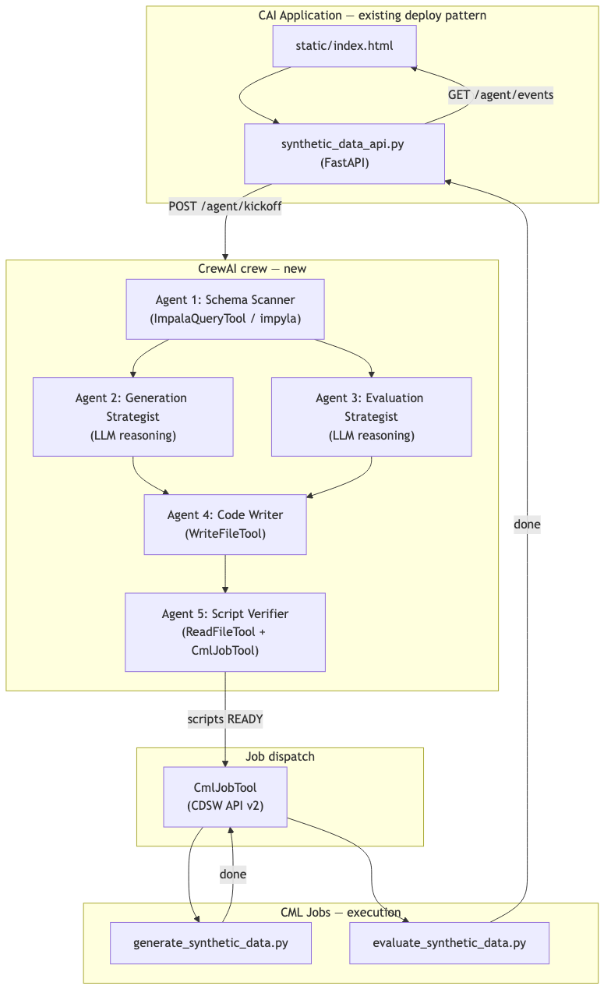

D3 Agentic Redesign Plan¶
Production synthetic data generation for ML training needs to work on any database schema, not only the hardcoded banking columns in the original D3 scripts. This plan adds a CrewAI agentic crew inside the existing CAI Application to discover schemas, author tailored Python scripts, and dispatch CML Jobs — while keeping deterministic execution at runtime.

Mermaid source: agentic_architecture.mmd (in the synthetic-data lab repository) — re-render with ./render_mermaid.sh.
Overview¶
| Layer | Role | LLM at runtime? |
|---|---|---|
CrewAI crew (synthetic_data_crew.py) |
Schema scan, strategy, script authoring, verification, job dispatch | Yes |
CML Jobs (generate_synthetic_data.py, evaluate_synthetic_data.py) |
Reproducible generation and evaluation | No |
CAI Application (synthetic_data_api.py) |
Operator UI + REST endpoints for both modes | No (orchestration only) |
The crew replaces run_pipeline.py scan for schema understanding and script authoring. The deterministic scripts remain the execution layer — the crew authors them; CML Jobs run them.
What changes vs original D3¶
| Original D3 | Agentic D3 |
|---|---|
describe_to_manifest.py called as subprocess |
Agent 1 runs DESCRIBE and FK validation via ImpalaQueryTool |
| Scripts are fixed/static in repo | Agent 4 writes/overwrites scripts per target database and tables |
run_pipeline.py all calls scripts directly |
POST /agent/kickoff starts the crew; crew dispatches CML Jobs via CmlJobTool |
Hardcoded banking column names (customer_id, account_no) |
LLM infers column roles from any schema — database agnostic |
| No Workbench job API from the app | CmlJobTool wraps CDSW API v2 (same pattern as deploy_app.py) |
Reference scripts in synthetic_data_workflow_d3/ stay as defaults / templates — Agent 4 reuses or customizes them per schema.
Architecture¶
Operator → static/index.html → synthetic_data_api.py (FastAPI)
│
┌───────────────┴───────────────┐
│ │
POST /pipeline/* POST /agent/kickoff
(deterministic) (agentic)
│ │
run_pipeline.py synthetic_data_crew.py
subprocess scripts 5-agent CrewAI crew
│ │
└───────────────┬───────────────┘
▼
CML Jobs (no LLM)
generate_synthetic_data.py
evaluate_synthetic_data.py
5-agent sequential crew¶
| Agent | Role | Tools |
|---|---|---|
| 1 — Schema Scanner | DESCRIBE tables, infer FKs, build manifest |
ImpalaQueryTool |
| 2 — Generation Strategist | Choose faker vs SDV, row counts, FK order | LLM only |
| 3 — Evaluation Strategist | Define checks (FK integrity, PII, distributions) | LLM only |
| 4 — Code Writer | Write generate_*.py and evaluate_*.py to disk |
WriteFileTool |
| 5 — Script Verifier | Read scripts, validate, dispatch Jobs | ReadFileTool, CmlJobTool |
Task chaining uses CrewAI context (same pattern as D1 tasks.yaml). Agent 5 calls CmlJobTool when verdict is READY.
Kickoff inputs¶
inputs = {
"target_database": "your_database",
"target_tables": "table_a,table_b", # or "all"
"rows_per_table": 1000,
"seed": 42,
"output_scripts_dir": "/home/cdsw/generated_scripts",
"output_data_dir": "/home/cdsw/synthetic_output",
"report_path": "/home/cdsw/artifacts/eval_report.md",
}
Files¶
New: synthetic_data_app/synthetic_data_crew.py¶
Core crew module, modelled on extra_materials/nl_to_sql_agent/nl_to_sql_crew.py.
LLM config (Cloudera AI Inference):
from crewai import Agent, Crew, Process, Task, LLM
def make_llm():
return LLM(
model=f"openai/{os.getenv('LLM_MODEL') or os.getenv('CAI_MODEL', 'gpt-4o')}",
base_url=os.getenv("LLM_API_BASE_URL") or os.getenv("CAI_BASE_URL"),
api_key=os.getenv("LLM_API_KEY") or os.getenv("CAI_API_KEY"),
)
Tools:
| Tool | Class | Used by |
|---|---|---|
ImpalaQueryTool |
BaseTool wrapping impyla |
Agent 1 |
WriteFileTool |
Writes text under OUTPUT_SCRIPTS_DIR |
Agent 4 |
ReadFileTool |
Reads generated scripts | Agent 5 |
CmlJobTool |
Create/run/poll CML Jobs via CDSW API v2 | Agent 5 |
Modified: synthetic_data_api.py¶
New endpoints (deterministic /pipeline/* kept for backward compatibility):
| Endpoint | Purpose |
|---|---|
POST /agent/kickoff |
Start crew async; returns run_id |
GET /agent/events |
Poll crew progress events |
GET /agent/status |
Current run status |
Modified: deploy stack¶
run_app.py— pip installcrewai,impyladeploy_app.py— forward LLM + Workbench env varsrequirements.txt— addcrewai>=0.80.0,crewai-tools,impyla,thrift-saslstatic/index.html— second form: Run agentic pipeline
Unchanged¶
generate_synthetic_data.py,evaluate_synthetic_data.py— execution scriptsrun_pipeline.py— local CLI and deterministic mode fallback- CAI deploy pattern (
deploy_app.py→ Application)
CML Job dispatch (CmlJobTool)¶
After Agent 5 returns READY, CmlJobTool runs two Jobs sequentially:
- Generate — script =
generated_scripts/generate_synthetic_data.py, env ={MANIFEST_PATH, OUTPUT_DIR, ROWS, SEED, ...} - Evaluate — script =
generated_scripts/evaluate_synthetic_data.py, env ={MANIFEST_PATH, SYNTHETIC_DIR, REPORT_PATH, ...}
Uses the same requests.Session + CDSW API v2 pattern as deploy_app.py. Optionally can delegate to CAI Workbench MCP Server (create_job_tool, create_job_run_tool, get_job_run_tool) if running alongside the Application.
Environment variables (agentic additions)¶
| Variable | Purpose |
|---|---|
LLM_API_BASE_URL |
OpenAI-compatible chat API base URL (e.g. https://api.openai.com/v1) |
LLM_API_KEY |
LLM API key |
LLM_MODEL |
Model ID (default gpt-4o) |
OUTPUT_SCRIPTS_DIR |
Where Agent 4 writes generated Python scripts |
CAI_WORKBENCH_HOST |
Workbench URL for CmlJobTool |
CAI_WORKBENCH_API_KEY |
Workbench API key |
CDSW_PROJECT_ID |
Project for Job creation |
Implementation order¶
synthetic_data_crew.py— tools + 5-agent crew +run_crew()/run_crew_async()synthetic_data_api.py—/agent/*endpointsrequirements.txt,run_app.py,deploy_app.pystatic/index.html— agent kickoff UI- Docs —
CML_JOBS.md, Handson_labsInstructions/synthetic_data_d3_workflow.md,Instructions/SYNTHETIC_DATA_DEMO_GUIDE.md
Status: All items above are implemented.
Outcomes¶
- Database-agnostic — LLM infers column roles from any
DESCRIBEoutput - Script freshness — Agent 4 tailors scripts to discovered schema; new source systems need no code changes
- Reproducible execution — once scripts are written, CML Jobs run deterministically (same seed, no LLM)
- Operator UI — one web app for agentic authoring and job monitoring
- CML integration —
CmlJobTooluses proven CDSW API v2; optional MCP Server for richer Job management
Related diagrams¶
| Figure | File | Purpose |
|---|---|---|
| Agentic pipeline | agentic_architecture.png |
Crew + CML Job dispatch |
| Deterministic pipeline | architecture.png |
Scan → generate → evaluate Jobs |
| Hybrid overview | hybrid_overview.png |
Workshop + Jobs + CAI App |
| CAI Application | cai_application.png |
deploy_app → FastAPI → scripts |
| FK generation order | fk_generation_order.png |
Master → account → transaction |